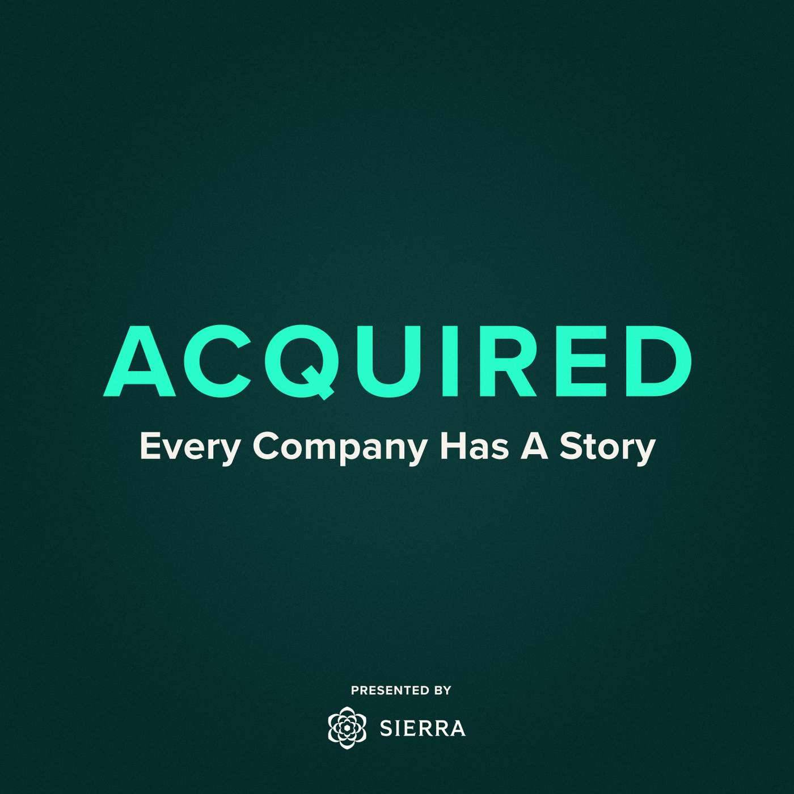

英文访谈/播客的中文精译：音频 + 文字版。用任意播客客户端（小宇宙 / Apple Podcasts / Overcast…）订阅 RSS：
https://YoungY620.github.io/babel/feed.xml

讲述伟大公司背后的故事与方法论。每期花上百小时调研一家公司，三到四小时讲透它如何从小透明变得无处不在。
Thu, 01 Oct 2015 10:00:00 -0700 · 原片 152 · 文字版